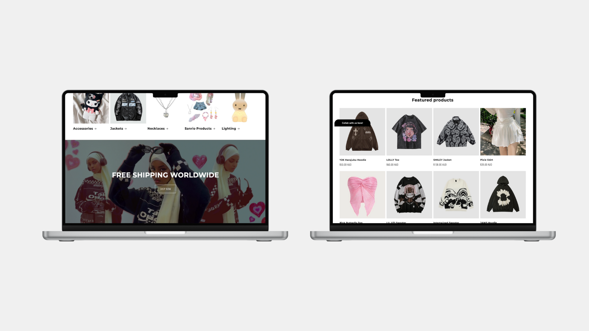
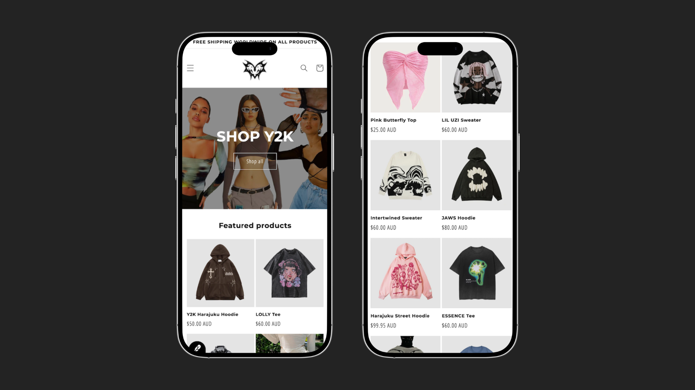
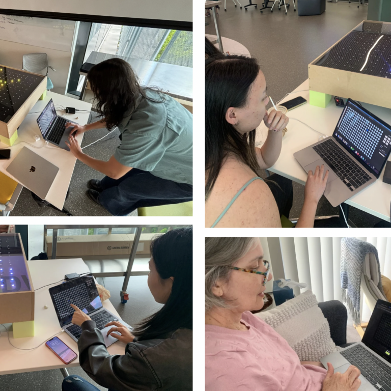

Proficient in creating custom Shopify themes, integrating apps, and optimizing online stores for better UX.
What is Y2KORE?
Y2KORE was a Y2K-inspired online clothing brand that captured the distinctive style of the early 2000s. Within one year, Y2KORE gained over 1,000 followers on Instagram and achieved 200+ sales. Running the brand provided me with hands-on experience in e-commerce, digital marketing, customer service, and website management, building a strong foundation in online retail and brand development.
Ultimately, I chose not to continue with Y2KORE, opting to explore new opportunities and more sustainable business models for future growth.



What Skills did this Project Involve?
 Marketing Skills
▼
Marketing Skills
▼
Experienced in crafting digital marketing campaigns, leveraging SEO, and using social media for growth.
User Testing
Running my personal online dropshipping business taught me valuable skills related to business strategy, as well as the technical aspects of e-commerce. I built and managed the store using Shopify, which provided me the ability to create a professional and user-friendly online storefront quickly without having to develop everything from scratch. This gave me the opportunity to focus more on the strategic areas like identifying needs for customers, market trends, and competitor analysis. Utilizing Shopify's built-in analytics, it came to my notice about customer behaviors, locations, and purchase patterns, which helped me in refining my marketing efforts to better retain customers.
Leveraging Shopify's built-in tools for SEO, integrating social media, and running email campaigns taught me hands-on digital marketing. I learned how to optimize the customer journey, increase conversions, and drive more repeat business. In general, this experience gave me a solid understanding of how e-commerce platforms work, the importance of data-driven decisions, and how to engage and retain customers effectively-skills that I can bring to a web development or marketing role.
Take a look at the 'Skills' section in the menu for a detailed rundown of the software and technical skills I bring to the table.

Marketing & Customer Acquisition
To drive sales, I utilized various marketing strategies, including targeted social media ads on Facebook and other platforms. By focusing on specific audience groups, I was able to grow my customer base and boost sales. I also engaged in email marketing campaigns and used customer reviews to build trust and encourage repeat business.
Website Management & Tools
I built and managed my online store using Shopify, which provided efficient tools and plugins to enhance the business operations. Additionally, I designed the website layout using Figma, organizing the product catalog for a smooth and intuitive shopping experience. Automating tasks like order fulfillment was essential to saving time and increasing productivity.
Identifying a Market Gap
I identified a significant gap in the market for Y2K clothing, as there were few places to find authentic pieces. Recognizing this opportunity, I stepped in and quickly built a collection of over 200 products. As a result, sales began to grow steadily, and I gained significant traction in a competitive market.
The experience was incredibly rewarding. Not only did I learn about ecommerce operations, but I also gained hands-on knowledge about POS systems, identifying market trends, and leveraging social media to scale a business.
This project highlights my full-stack approach to design and engineering, from building the physical table to designing the electronics and developing a web-based control interface. By combining custom-built hardware with a responsive web server, I created an interactive LED experience that demonstrates my skills in both physical construction and software integration, bridging hands-on craftsmanship with seamless, user-friendly technology.